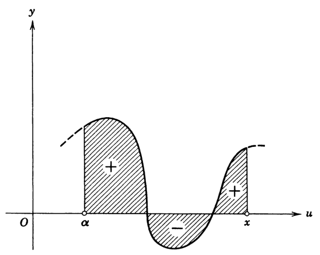

定义与基本公式
函数 f(x) 的积分值依赖于积分限 a,b，因而积分是两个积分限 a,b 的函数。为了仔细考察这种依赖关系，设下限是一个固定的数，记为 α。积分变量改用 u 来表示（见第 126 页），上限则由 b 改写为 x，以表明现在把上限看作变量，要研究积分作为这个上限的函数怎样变化。于是写作
ϕ(x)=∫αxf(u)du.称 ϕ(x) 为 f(x) 的一个不定积分。说“一个”不定积分，就是要表明可以任取另一数代替下限 α，这样得到的积分值一般也会不同。从几何上看，ϕ(x) 等于曲线 y=f(u) 与 u 轴、固定纵线 u=α 和可动纵线 u=x 所围的面积（图 2.17 的阴影），符号按前面讨论的法则确定（第 126 页）。

图 2.17 作为面积的不定积分
由不定积分 ϕ(x) 可以得到任一个给定的定积分。事实上，根据积分的基本法则，
∫abf(u)du=∫aαf(u)du+∫αbf(u)du=−∫αaf(u)du+∫αbf(u)du=ϕ(b)−ϕ(a).特别地，取另一下限 α′ 所得的不定积分也可用 ϕ(x) 表示：
∫α′xf(u)du=ϕ(x)−ϕ(α′).可见，任何这样的不定积分与选定的 ϕ(x) 只相差一个常数。
不定积分的连续性
若函数 f(x) 在区间 [a,b] 上连续，α 是区间里的一点，则不定积分 ϕ(x)=∫αxf(u)du 也是在同一区间上有定义的 x 的函数。不难看出，连续函数 f(x) 的不定积分 ϕ(x) 也连续。因为任取区间中的两个数 x,y，由中值定理有
ϕ(y)−ϕ(x)=∫xyf(u)du=f(ξ)(y−x),(15)其中 ξ 是以 x,y 为端点的区间中的某个值。由 f 连续，
y→xlimϕ(y)=y→xlim[ϕ(x)+f(ξ)(y−x)]=ϕ(x)+f(x)⋅0=ϕ(x),这就表明 ϕ 连续。更确切地说，在任何这样的闭区间中，若 M 是区间内 ∣f∣ 的最大值，就有 ∣ϕ(y)−ϕ(x)∣≤M∣y−x∣，所以 ϕ 甚至是利普希茨连续的。
公式 (15) 还表明，如果 f 在全区间为正，则 ϕ(x) 是 x 的递增函数。因为 y>x 时，ϕ(y)=ϕ(x)+f(ξ)(y−x)>ϕ(x)。
求一个函数的不定积分，是产生新种类函数的重要方法。第 2.5 节将用它引进对数函数。我们也将由此初步看到，数学分析的一般定理怎样引出极为精彩的具体公式。到第 3.14a 节（第 298 页）还会看到，若希望把某些函数（例如三角函数）的定义建立在纯分析的基础上，不必依赖直观的几何解释，通过已有函数的积分来定义新函数是一个很好的办法。
译者注 固定下限以后，这里定义的 ϕ 是一个确定的函数，并且 ϕ(α)=0。换下限只会把图像上下平移。第 2.9 节将证明 ϕ′(x)=f(x)，这才把这里的“不定积分”与通常所说的原函数联系起来。